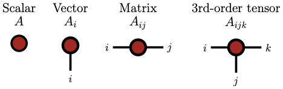
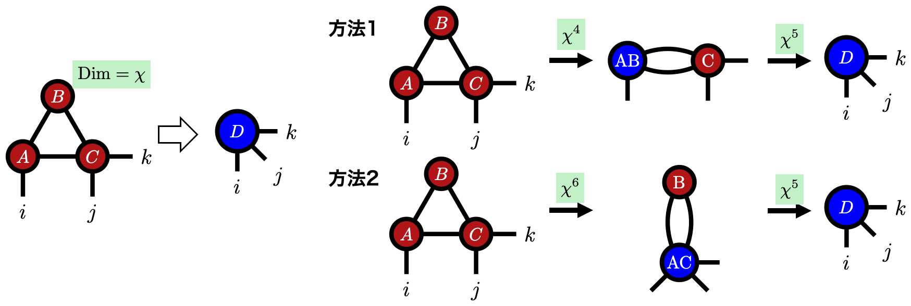
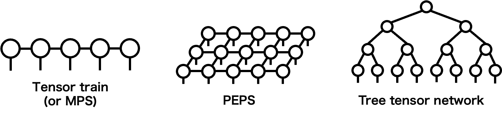
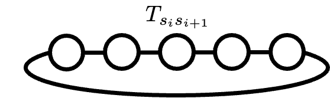

Method
テンソルネットワーク
テンソルネットワークは，多自由度の量子状態や高次元関数を， 小さなテンソルを縮約したネットワークとして表現する考え方です． 巨大な配列をそのまま持つ代わりに，構造(関数の空間依存性)を活かして圧縮された形で扱えることが大きな利点です．
低ランク近似との関係
テンソルネットワークの背景には，行列の低ランク近似を多次元テンソルへ拡張するという見方があります． まず SVD と行列の圧縮を確認したい場合は， 行列の低ランク近似 のページにまとめています．
なぜテンソルネットワークか
たとえば $N$ 個の自由度を持つ波動関数 $\psi(\sigma_1,\sigma_2,\dots,\sigma_N)$ を考えます． 各 $\sigma_i$ が $\pm 1$ の値を取るだけでも， この波動関数をそのまま保持するには $2^N$ 個の成分が必要です． これは自由度数 $N$ に対して指数関数的に増大します．
テンソルネットワークでは，この巨大なテンソルを適切に行列化し，SVD のような低ランク近似を繰り返し使うことで， 複数の小さなテンソルの縮約として表します． 行列の低ランク近似で現れた「重要な成分だけを残す」という考え方が， テンソルネットワークの基本的な情報圧縮のアイデアです．
テンソルの定義とダイアグラム表現
ここでいうテンソルは，離散変数の多変数関数，あるいは多次元配列のことです． $k$ 個のインデックス $i_1,i_2,\dots,i_k$ を指定すると値がひとつ定まる離散変数関数を， $k$ 階テンソルと呼びます．たとえばスカラー，ベクトル，行列は，それぞれ 0 階，1 階，2 階のテンソルです．
ここで $d_\ell$ はインデックス $i_\ell$ が取りうる値の数を表します． テンソルネットワークでは，テンソルを丸や四角形などのノードで表し， インデックスをノードから伸びる線として表すダイアグラム表現をよく使います． インデックスが増えるとテンソルを成分表示した数式は急に読みにくくなりますが，ダイアグラムを見ると 「どのテンソルがどのインデックスで縮約を取られているか」が視覚的に分かります．

縮約
テンソル同士が共通のインデックスを持つとき，そのインデックスについて和を取る操作を縮約と呼びます． たとえば 3 階テンソル $A_{ijk}$ と $B_{klm}$ の共通インデックス $k$ を縮約すると， 次のような 4 階テンソル $D_{ijlm}$ が得られます．
ダイアグラムでは，縮約するインデックスを 1 本の線でつないで表します． つながっていない線は縮約後に残るインデックスです．
行列積もトレースも，テンソル同士の縮約の特別な場合として見ることができます．
縮約順序と計算量
複数のテンソルの縮約で表現されたテンソルの成分を計算するためには，実際に和(縮約)を実行する必要があります． この際，どの順番で縮約するかが重要です． 同じ最終結果を与えるネットワークでも，途中で現れるテンソルのサイズが変わるため， 縮約順序によって計算量が大きく変わります．
たとえば全てのインデックスの次元を $\chi$ として，次の縮約を考えます．
先に $A$ と $B$ を縮約する場合は全体でおよそ $\mathcal{O}(\chi^5)$， 先に $A$ と $C$ を縮約する場合はおよそ $\mathcal{O}(\chi^6)$ になります． このように，テンソルネットワークでは「ネットワークをどう分解して計算するか」も本質的な問題になります． 一般には最適な縮約順序を見つけること自体が難しいため， 実用上はできるだけ計算量の小さい準最適な順序を探すことが重要です．

テンソルネットワーク
複数のテンソルを縮約して形成されるネットワークを，テンソルネットワークと呼びます． 様々なネットワーク構造があり，1 次元鎖状の Tensor Train (TT)， 物理では同じ構造を指すことが多い Matrix Product State (MPS)，2 次元格子状の PEPS， 階層的な木構造を持つ TTN などが代表例です． TT は数値線形代数の文脈で体系化され [1]， MPS は DMRG と密接に関係する表現として発展してきました [2] [3]． どの構造が適しているかは，対象とする問題の相関構造に依存します．

1 次元鎖状の MPS では，$N$ 個の自由度を持つ波動関数を次のような積の形で表します．
ここで $\alpha_i$ はボンドと呼ばれる，分解の都合で現れる仮想的なインデックスです． ボンドの次元が大きいほど複雑な相関を表せますが，必要なパラメータ数も増えます． 逆に，ボンドの次元が小さい範囲で十分な近似精度が得られれば， 元の巨大なテンソルを非常に少ないパラメータで近似できます．
物理での例
テンソルネットワークは，統計物理の分配関数にも自然に現れます． たとえば 1 次元イジング模型を考えると，周期境界条件のもとでハミルトニアンは 次のように書けます．
転送行列 $T_{s_i s_{i+1}}=\exp(\beta J s_i s_{i+1})$ を導入すると， 分配関数は転送行列を輪状につないだ縮約として表せます．
この表式では，それぞれの転送行列が 2 階テンソルであり， 隣り合うスピン変数について縮約されています． 開いたインデックスが残らないため，最終的に得られる量はスカラーであり， これは分配関数がスカラーであることに対応しています．

研究との関係
私の研究では，このテンソルネットワークによる情報圧縮を，高次元関数やファインマンダイアグラムに対して利用します． 特に QTT や TCI は，高次元の対象を低ランク構造として扱うための重要な道具です．
関連する話題として， QTT，Matrix Cross Interpolation， TCI は テンソルネットワークの考え方を高次元関数の圧縮に活かす具体的な道具です [4] [5]．
参考文献
このページは，修士論文の第3章をWeb向けに整理し，関連する原典を併記したものです． 修士論文PDFは こちら から確認できます．
- I. V. Oseledets, “Tensor-Train Decomposition,” SIAM Journal on Scientific Computing 33, 2295 (2011).
- S. R. White, “Density matrix formulation for quantum renormalization groups,” Physical Review Letters 69, 2863 (1992).
- S. Ostlund and S. Rommer, “Thermodynamic limit of density matrix renormalization,” Physical Review Letters 75, 3537 (1995).
- B. N. Khoromskij, “O(d log N)-Quantics Approximation of N-d Tensors in High-Dimensional Numerical Modeling,” Constructive Approximation 34, 257 (2011).
- N. Gourianov et al., “A quantum-inspired approach to exploit turbulence structures,” Nature Computational Science 2, 30 (2022).